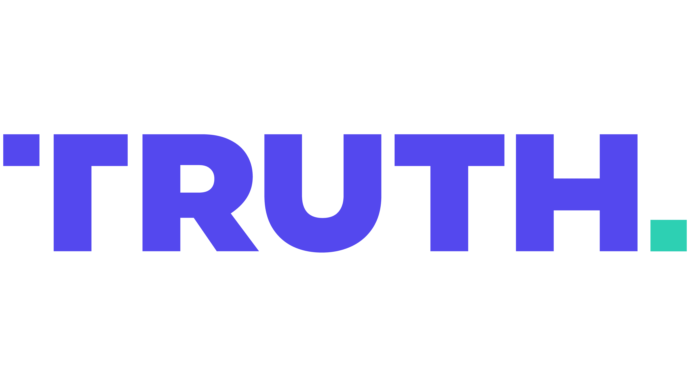

分析日期: 2025-11-08 02:51:43
現在日期:
Stock 股票
XOM
買入 (BUY)
Options 期權
XOM
CALL
目標: $115
Dec 20, 2025 - BUY

If Republicans kill the Filibuster, they sail to Victory for many years to come. If they don’t, DISASTER waiting to happen!
你怎麼看這次的股票推薦?
你怎麼看這次的推薦?
📈 股票建議
Top 1: XOM BUY
- 理由說明： XOM（埃克森美孚）在當前政治環境下繼續受惠於特朗普推動嘅能源政策，今日股價升2.17%反映市場對能源股嘅信心未減。政府停擺導致經濟不確定性增加，能源需求相對穩定且具防守性，XOM估值合理，是防禦性資產首選。
- 信心水平： 中
- 主要風險： 政治僵局若持續惡化可能拖累整體市場情緒，能源價格波動亦為潛在風險。
Top 2: RTX BUY
- 理由說明： 雷神（RTX）受益於邊境安全及國防政策支持，股價今日穩健上升0.76%，顯示國防板塊在政治不確定時期仍具韌性。特朗普對強化安全政策的推動，令RTX具備中期支撐。
- 信心水平： 中
- 主要風險： 政治風險高度集中，若共和黨內部政策分歧加劇，國防支出可能面臨不確定性。
Top 3: PASS
- 其他板塊如製造業（CAT）及整體市場（SPY）受政治僵局影響較大，短期表現疲弱，建議暫觀望，避免追入。
📊 期權建議
Top 1: XOM CALL $115 exp Dec 20, 2025 BUY
- 理由說明： XOM期權價格反映市場對未來能源政策持續支持嘅預期，CALL選擇權價格合理，短期內股價有望延續強勢。行使價115美元與現價116.98美元接近，具備實值優勢。
- 信心水平： 中
- 主要風險： 政治僵局若突然緩解，市場避險需求下降，可能壓抑能源股波動。
Top 2: SPY PUT $670 exp Dec 20, 2025 BUY
- 理由說明： 整體市場（SPY）因政府停擺和政治不確定性持續承壓，近期股價下跌0.73%反映弱勢。PUT選擇權作為避險工具，有助捕捉短期市場回調風險。
- 信心水平： 中
- 主要風險： 若政治局勢快速改善或市場出現反彈，PUT價值可能受損。
Top 3: PASS
- 目前無其他期權具備足夠信心及合理價格，建議暫不作推薦。
🎯 總結
整體建議優先級：
以能源股XOM及國防股RTX為首選買入標的，配合XOM CALL及SPY PUT選擇權作為短中期策略，兼顧增長及避險。其他板塊因政治僵局影響較大，建議保持觀望。
整體信心水平：
中等信心，因政治局勢高度不穩，短期波動風險依然存在，但能源及國防板塊具防守及政策支持，值得關注。
關鍵風險監控：
必須密切留意共和黨內部對廢除filibuster意願與政治談判進展，政府停擺若持續加劇，對經濟及市場情緒構成壓力。能源價格波動及國際地緣政治亦為不容忽視之風險。
市場展望：
講真，依家呢場政治大戲真係幾刺激，Trump直接話唔除阻撓議事就等於災難，好似要攞命咁推緊呢個議題，但共和黨內部又唔係咁易就答應，搞到政府停擺變歷史最長，市場都唔敢放鬆。投資者依家好似踩緊煞車，唔知邊個先係蛇王，拖住整個市場行。能源股因為有政策撐，變成避風港，XOM今日升得好勁，RTX國防股都算穩陣啲。整體市場就仲係跌住，SPY跌咗，投資者心理揸緊啲避險工具好合理。呢排就算你想搏反彈都要小心啲，因為政治風險未解，轉眼一個消息就可以玩大晒。總括講，大家要有耐性，睇住局勢明朗先好大手出擊，唔好邊有咁大隻蛤乸隨街跳。
今日嘅內幕就分享到呢度，大家繼續留意政治同市場風向，唔好畀呢單嘢真係影響心情，穩陣先係王道。